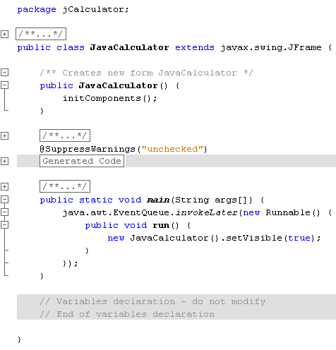
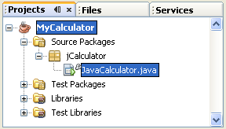
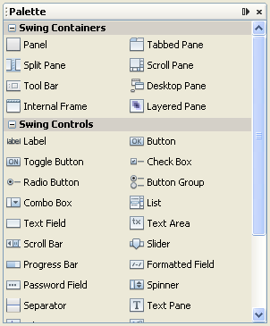
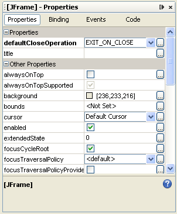
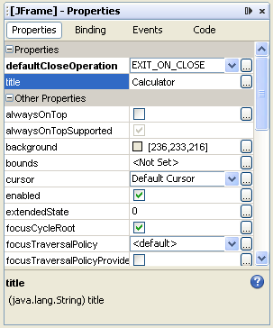
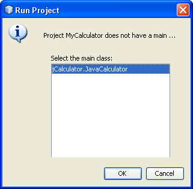
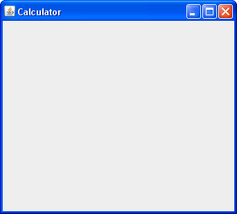

Learn Java- Complete Offline Beginners Guide
When the wizard from the previous section has finished, it will create a blank form in the main window:

The form is a blank, at the moment, and has an orange rectangle surrounding it. The orange rectangle means that the form is the currently selected object. Click away and you'll see a blue rectangle instead. This means that the form is not selected. Click back onto the form to select it, and you'll see the orange rectangle again.
Note the two buttons at the top, Source and Design. You're in Design at the moment. Click on Source to see the following code:

You can expand and contract the plus symbols to reveal and hide code. Notice, though, that a main method has been created. When the programme starts it's the main method that will be called. It's creating a new object from our form, and setting its visible property to true.
But NetBeans generates all this code for you. Otherwise, you'd have to do it all yourself!
Have a look at the Projects area on the left again. You'll see that a package and a class file have been added:

Click back on the Design button at the top. You'll see your blank form again. To the right, you'll have noticed two areas: a Palette with a lot of controls in it, and a Properties area. The Palette should look like this:

And the Properties area should look like this:

(If you can't see them, click Window> Palette and Window > Properties from the NetBeans menu.)
A property of an object is a list of the things you can do with it, like set the background colour, set the text, set the font, and lots more. Let's change the title.
Make sure your form is selected. If it is, it will be surrounded with an orange rectangle. The properties area will say JFrame at the top.
Click inside of the title area and type Calculator:

Then press the enter key.
To see what effect changing the title property has, run your programme in the usual way. When you run the programme for the first time, NetBeans will display a dialogue box asking you which main method you want to use:

You only have one, which is in your JavaCalculator class, so just click OK. Your form should then appear:

The form has the title you just typed, plus some default icons for minimize, maximize and close. Click the X to close your programme, and return to the Design environment.
In the next part, we'll add a text box to the form.